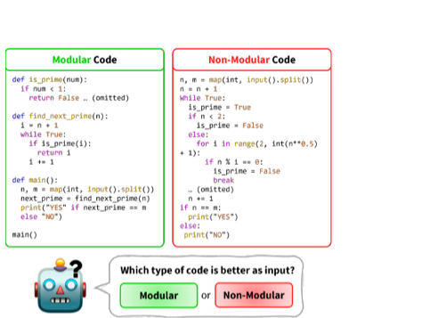

Revisiting the Impact of Pursuing Modularity for Code Generation
EMNLP 2024 Findings
Deokyeong Kang, Ki Jung Seo, Taeuk Kim
한줄 요약
순환 복잡도에 기반한 새로운 모듈성 점수(MoS) 지표를 도입하고, 변환 부수 효과를 엄밀하게 통제한 실험을 5개 LLM(Code Llama 7B/34B, DeepSeekCoder 6.7B/33B, GPT-4o-mini)과 2개 경쟁 프로그래밍 벤치마크(APPS, CodeContests)에서 수행한 결과, 모듈형 코드가 LLM 기반 코드 생성 성능의 핵심 요인이 아니며, 기존 연구에서 보고된 이점은 모듈화 자체가 아닌 코드 변환 과정의 부수 효과일 가능성이 높음을 밝힌 연구입니다.

Figure 1. 모듈형 vs 비모듈형 코드 생성 접근법 비교. 모듈화 추구가 실제로 LLM 기반 코드 생성 성능을 향상시키는지 검토합니다.
배경 및 동기
모듈형 프로그래밍 -- 최종 프로그램을 작고 독립적인 구성 요소를 통합하여 구성하는 방식 -- 은 소프트웨어 개발에서 오랫동안 바람직한 관행으로 여겨져 왔습니다. 복잡성을 줄이고, 유지보수성을 높이며, 코드 재사용을 가능하게 합니다. 최근 LLM 기반 코드 생성 에이전트의 부상과 함께, 인간의 인지와 협업을 위해 설계된 이 전통적 원칙이 근본적으로 다른 이러한 새로운 도구에도 동일하게 효과적인지에 대한 의문이 제기됩니다.
기존 통념: 모듈형 코드가 인간 프로그래머에게 도움이 되는 것처럼 LLM에도 도움이 될 것이라는 가정이 있었습니다. 복잡성 감소, 재사용성 향상, 추론 용이성 등의 이점이 기대되었으며, 다수의 선행 연구(예: CodeT, Parsel, 모듈형 프롬프팅 전략)가 LLM에 모듈형 코드 생성을 유도했을 때의 성능 향상을 보고했습니다. 이들 연구는 인간에게 유효한 모듈성의 이점이 언어 모델에도 자연스럽게 전이될 것이라고 전제했습니다.
문제점: 기존 연구들은 모듈성을 정량적으로 측정할 원칙적인 방법이 부재했습니다. 적절한 지표 없이는, 관찰된 성능 향상이 실제로 모듈성 자체에서 비롯된 것인지 확인할 수 없습니다. 선행 연구들은 보통 "모듈형 프롬프팅" vs. "표준 프롬프팅"을 비교했지만, 모듈형 변환 과정에서 코드 간소화, 재포맷팅, 변수명 변경, 심지어 미묘한 알고리즘 변경 등 성능에 독립적으로 영향을 미칠 수 있는 교란 요인이 도입됩니다.
핵심 질문: 정형적 모듈성 지표와 신중하게 설계된 코드 범주를 통해 교란 요인을 엄밀하게 통제했을 때, 모듈성이 실제로 LLM 기반 코드 생성을 향상시키는가? 아니면 성능 향상을 잘못된 원인에 귀속시켜 온 것인가?
제안 방법
저자들은 코드 모듈성이 LLM 성능에 미치는 영향을 측정하고 평가하기 위한 정량적 프레임워크를 제안합니다. 이 프레임워크는 정형적 모듈성 지표, 4가지 코드 범주를 활용한 통제된 실험 설계, 포괄적 평가 프로토콜의 세 가지 구성 요소로 이루어집니다.
1
모듈성 점수(MoS) 지표
순환 복잡도(Cyclomatic Complexity, CC)에 기반한 새로운 지표입니다. CC는 제어 흐름 그래프에서 CC = E - N + 2 (E: 간선 수, N: 노드 수)로 계산하여 독립 실행 경로 수를 측정합니다. 이상적인 모듈 수를 m* = ⌊CCtotal / τ⌋ (τ = 5, 소프트웨어 공학에서 널리 사용되는 복잡도 임계값으로 각 모듈이 최대 5개의 독립 경로를 처리해야 함을 의미)로 산출합니다. MoS는 m* > 0일 때 min(1, n/m*) (n: 실제 모듈 수), m*과 n이 모두 0일 때 0, m* = 0이고 n > 0일 때 1로 정의됩니다. 이 지표의 유효성은 함수 호출 빈도와의 강한 상관관계(Pearson = 0.41, Spearman = 0.61)로 확인되어, 의미 있는 모듈 상호작용을 포착함을 검증했습니다.
2
통제된 비교를 위한 4가지 코드 유형
모듈성의 효과를 변환 부수 효과와 분리하기 위해 4가지 코드 유형을 정의합니다: MC (모듈형 코드 -- 기존 데이터셋 솔루션에서 추출한 자연적으로 높은 MoS를 가진 솔루션), SC (단일 코드 -- 동일 문제의 MoS=0 솔루션으로 단일체 구현), TMC (변환된 모듈형 코드 -- 기능적 등가성을 유지하면서 GPT-3.5-Turbo로 SC를 모듈형으로 변환), TSC (변환된 단일 코드 -- TMC의 헬퍼 함수를 수동으로 인라인하여 단일 형태로 복원). 핵심 비교는 TMC vs. TSC입니다: 두 유형 모두 동일한 변환 파이프라인을 거쳤으므로 변환 부수 효과를 공유하되, 코드가 모듈형인지 단일형인지만 다릅니다. 이를 통해 순수한 모듈성의 효과를 분리합니다.
3
평가 프로토콜
두 가지 패러다임에서 실험합니다: 각 코드 유형에서 추출한 2-shot 시연을 사용한 In-Context Learning (ICL), 그리고 MC 전용 또는 SC 전용 데이터셋(CodeContests ~5K 문제, 61K 학습 예제)으로 학습하는 파인튜닝. 다양한 규모의 5개 LLM을 평가합니다: Code Llama (7B, 34B), DeepSeekCoder (6.7B, 33B), GPT-4o-mini. 두 가지 난이도 높은 벤치마크를 사용합니다: APPS (Introductory, Interview, Competition 난이도 분할; ~2K 학습 / ~3.7K 테스트 문제)와 CodeContests (~7.3K 학습 문제, 문제당 평균 182개 솔루션, 165개 테스트 문제). 성능은 pass@1, pass@5, pass@10으로 측정합니다.
4
퍼플렉시티 및 상관관계 분석
생성 성능 외에도, LLM이 모듈형 코드와 단일 코드 중 어느 쪽을 본질적으로 선호하는지 측정하기 위한 퍼플렉시티 분석을 수행합니다. 또한 100개의 CodeContests 샘플에 대해 Pearson 및 Spearman 상관 검정을 실시하여, in-context 시연의 MoS 값과 pass@1 점수 간의 직접적 통계적 관계를 정량화합니다. 이러한 다면적 분석을 통해 발견이 단일 평가 렌즈의 부수물이 아님을 보장합니다.
실험 결과
CodeContests ICL 결과 (pass@1 / pass@10)
모델
MC
SC
TMC
TSC
Code Llama 7B
1.98 / 8.02
2.58 / 8.81
2.57 / 10.18
4.35 / 10.67
Code Llama 34B
4.11 / 12.78
5.83 / 14.10
3.39 / 13.55
5.61 / 15.32
DeepSeekCoder 6.7B
5.30 / 12.78
7.15 / 16.27
8.02 / 17.88
8.19 / 17.79
DeepSeekCoder 33B
6.79 / 16.14
8.87 / 20.50
9.38 / 22.74
8.78 / 22.09
GPT-4o-mini
14.07
15.35
14.29
14.40
APPS ICL 결과 (pass@1 / pass@5)
모델
MC
SC
TMC
TSC
Code Llama 7B
7.98 / 12.75
11.12 / 15.78
14.67 / 19.63
13.84 / 17.15
DeepSeekCoder 6.7B
24.76 / 32.59
28.93 / 36.26
34.26 / 40.74
33.24 / 39.73
CodeContests 파인튜닝 결과 (pass@1 / pass@10)
모델
MC (파인튜닝)
SC (파인튜닝)
Code Llama 7B
3.88 / 12.20
4.42 / 12.56
DeepSeekCoder 6.7B
6.06 / 13.82
8.73 / 16.16
퍼플렉시티 분석: LLM의 코드 스타일 선호도
모델
PPL(MC)
PPL(SC)
Code Llama 7B
2.20 ± 0.57
2.40 ± 1.00
Code Llama 34B
2.02 ± 0.45
2.00 ± 0.44
DeepSeekCoder 6.7B
1.93 ± 0.41
2.05 ± 0.63
DeepSeekCoder 33B
1.89 ± 0.42
1.89 ± 0.42
MoS와 성능의 상관관계 (CodeContests, 100개 샘플)
모델
Pearson
Spearman
Code Llama 7B
-0.34 (p=0)
-0.31 (p=0)
DeepSeekCoder 6.7B
-0.21 (p=0.04)
-0.25 (p=0.01)
SC가 일관되게 MC를 능가: 5개 모델과 두 벤치마크 모두에서, 단일(비모듈형) 코드가 자연적 모듈형 코드보다 in-context 시연으로서 더 우수한 성능을 보였습니다. APPS에서 DeepSeekCoder 6.7B는 SC로 28.93, MC로 24.76 pass@1을 달성하여 4점 이상의 차이를 보였습니다.
TMC vs. TSC에서 모듈성의 이점 불명확: 모듈성만 다른 변환 코드 쌍을 비교했을 때(순수 효과 분리), 성능 차이는 미미했습니다. 예를 들어 DeepSeekCoder 6.7B는 CodeContests에서 TMC 8.02 vs. TSC 8.19로, 기존 보고된 이점이 모듈성이 아닌 변환 과정의 부수 효과였음을 시사합니다.
TMC/TSC 모두 MC를 상회: 두 변환 변형 모두 원래 모듈형 코드를 크게 능가하여, 변환 과정(코드 재포맷팅, 간소화)이 -- 모듈 구조가 아닌 -- 기존에 모듈성의 공으로 돌려졌던 성능 향상의 실제 원인임을 확인합니다.
파인튜닝에서도 동일한 경향: 모듈형 또는 단일 코드만으로 학습해도(~5K 문제, 61K 예제) SC 학습 모델이 MC 학습 모델을 능가했습니다. DeepSeekCoder 6.7B: 8.73 vs. 6.06 pass@1 -- 단일 코드가 44% 상대적 향상을 달성했습니다.
MoS와의 음의 상관관계: 100개 CodeContests 샘플에 대한 통계 분석 결과, 모듈성 점수와 코드 생성 성능 간 약한 음의 상관관계가 확인되어 (Pearson: -0.34 ~ -0.21, 모두 통계적으로 유의), 기존 통념과 정면으로 배치됩니다.
퍼플렉시티로 드러난 LLM의 중립성: 4개 모델 모두 모듈형 코드와 단일 코드에 거의 동일한 퍼플렉시티를 보였습니다 (PPL ~1.9--2.4). DeepSeekCoder 33B는 양쪽 모두 정확히 1.89를 기록했습니다. 모듈 구조를 통해 이해도가 크게 향상되는 인간과 달리, LLM은 코드 구조에 대해 진정으로 무관심합니다.
GPT-4o-mini는 무관심: 가장 강력한 모델은 4가지 코드 유형 간 거의 동일한 성능을 보여 (14.07--15.35 pass@1), 고성능 모델에서 어떤 스타일이든 동등한 능숙도로 처리할 수 있어 모듈성의 영향이 미미함을 시사합니다.
왜 중요한가
이 연구는 LLM 기반 코드 생성에서 "모듈화가 항상 좋다"는 기존 가정을 뒤집으며, 연구자와 실무자 모두에게 중요한 통찰을 제공합니다:
변환 부수 효과지, 모듈성이 아니다: 기존 연구에서 보고된 모듈성의 효과가 코드 변환 과정의 의도치 않은 부수 효과(예: 간소화, 재포맷팅, 변수명 변경)에서 비롯되었을 가능성이 높음을 입증했습니다. TMC vs. TSC 비교 -- 논문에서 가장 엄밀하게 통제된 실험 -- 는 무시할 수 있는 차이만 보여주어, 코드 변환과 코드 구조를 혼동하는 향후 연구에 대한 중요한 방법론적 경고를 제공합니다.
LLM은 인간이 아니다: 퍼플렉시티 분석 결과 LLM은 모듈형 코드와 단일 코드에 대해 거의 동일한 예측 능력을 보였습니다 (PPL 차이가 모든 모델에서 0.2 이내). 이해와 유지보수를 위해 모듈 구조에서 큰 이점을 얻는 인간과 달리, 이는 근본적인 인지 격차를 드러냅니다: 코드 예제의 유용성에 영향을 미치는 요인이 인간과 LLM 관점에서 다르며, 인간의 소프트웨어 공학 휴리스틱을 AI 시스템에 무비판적으로 전이해서는 안 됩니다.
실용적 지침: 실무자들은 LLM 기반 코드 생성을 위해 코드 시연을 모듈화하는 데 추가 노력을 기울일 필요가 없습니다. Few-shot 예제 구성이나 파인튜닝 데이터셋 구축 시 구조적 스타일보다 코드의 품질, 정확성, 그리고 변환 과정의 재포맷팅 효과가 더 중요함을 시사합니다.
방법론적 템플릿: MoS 지표와 4가지 범주 실험 설계는 다른 코드 속성(예: 주석 스타일, 명명 규칙, 디자인 패턴)과 LLM 성능에 대한 그 영향을 조사하는 향후 연구를 위한 재사용 가능한 템플릿을 제공합니다. 변환 후 역변환을 통해 교란 요인을 분리하는 접근법은 광범위하게 적용 가능합니다.